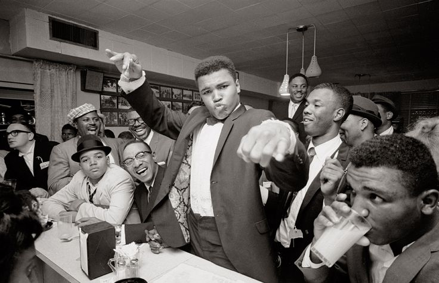

Here's time line of Muhammad Ali's life:
Early Life (1942–1959)
- January 17, 1942 --- Born Cassius Marcellus Clay Jr. in Louisville, Kentucky to Odessa and Cassius Clay Sr., A sign painter and church muralist
- 1944 --- His only sibling, brother Rudy is born
- 1954 --- At age 12, his bicyle is stolen; a local policeman suggests he take up boxung to his anger and so begins his career
Olympic Glory & Pro Debut (1960)
- Septemnber 5, 1960 --- Wins the Olympic gold medal in the light heavyweight division at Rome summer Olympics, defeating Zbigniew Pietrzykowski of Poland
- October 29, 1960 --- Mekes his professional boxing debut, winning a six-round decision over Tunney Hunsaker
Rise to World Champion
- 1961--- For his sixth pro fight against Lamar Clark, he predicts the round of his opponent's defeat for the first time and delivers
- 1962--- Hears Elijah Muhammad speak for the first time and meets Nation of Islam leader Malcom X, who becomes a friend and adviser
- Fabruary 25, 1964--- Shocks the world by defeating Sonny Liston in a major upset to win the world heavyweight chamionpship at just 22 years old
- March 6, 1964--- Joins the Nations of Islam and changes his name from Cassius Caky to Muhhamed Ali, denouncing his birth name as a "slave name"
- August 1964--- Marries his first wife, Sonji Roi, after knowing her for only one month
Activism & Exile (1966-1970)
- 1966--- Files for conscientuous objector status, refusing to serve in the U.S. military due to his religious beliefs and opposition to the Vietnam War
- 1967--- Formally refuses military induction; is arrested, stripped of his boxing titles and banned from the sport
- 1970--- Returns to the in Georgia (which had no boxing commission to block him), defeating Jerry Quarry
The Greatest Fights (1971–1978)
- 1971--- Fights Joe Frazier in the famous "Fight of the Century" and loses; later that year, the U.S. Supreme Court reverses his draft evasion conviction, allowing him to box freely again
- OCtober 30, 1974--- Defeats George Foreman in the legendary "Rumble in the Jungle" in Kinshasa, Zaire, regaining the heavyweight title
- 1975--- Fight of the Century
- 1975--- Fights Joe Frazier in the grueling "Thrilla in Manila"
- 1978--- Loses his title to Leon Spinks, then defeats Spinks in a rematch to become the first three-time lineal World Heavyweight Champion
Retirement & Later Years (1979–2005)
- 1979--- Announces retirement from boxing
- October 2, 1980--- Comes out of retirement to fight champion Larry Holmes; suffers a technical knockout in the 11th round — the first time in 60 professional bouts he fails to go the distance
- 1984--- Diagnosed with Parkinson's disease, a condition common among boxers
- July 20, 1996--- Lights the Olympic flame at the Summer Games in Atlanta; an estimated 3 billion people watch with emotion
- 2005--- Receives the Presidential Medal of Freedom from President George W. Bush
- 2009--- Attends the inauguration of President Barack Obama
Death & Legacy (2016)
- June 3, 2016--- Dies in Phoenix, Arizona, at age 74, surrounded by family, after years of battling Parkinson's disease
- June 10, 2016--- Funeral held in his hometown of Louisville, Kentucky